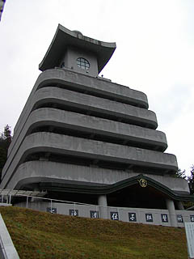

能勢の高燈籠/大阪府能勢町
大阪府最北の町、能勢。はっきりいって何もないところである。その能勢の外れの山の中に怪しげな塔が建っている。その姿は灯篭を巨大化させたようなカタチで、その名も能勢の高燈籠。
この（たぶん）新興宗教の施設、外から見ればデカい灯篭なのだが、その中には悪夢のような仕掛けが待っている。入り口にある看板の「正浄遺伝子組替祈願」という文句も凄い。
この高燈籠、建物の内部が中央を吹き抜けとし、そこを囲むように5層の螺旋のスロープになっており、そこを登っていくことにより、三十三観音を拝観していく、という正に現代のさざえ堂といったスタイルなのだ。
で、なにが凄いかというと・・・とにかく一階正面から中にはいってみよう。中央の吹き抜けに金ピカの多宝塔があり、その横に受付があり、やけに笑顔のさわやかなお姉さんが座っている。入塔料300円也を払うと、この高燈籠の参拝方法などを小難しい専門用語をおり混ぜながら説明してくれる。ついでに高燈籠生写真5枚セットなどもにこやかに進めてくれるが、その後には建物の中を監視するモニターが並んでおりちょっと緊張。
で、ひととおり説明が終わるとお姉さん、さてと、といった感じで多宝塔の前まで歩いて行き、何やら機械のスイッチを押す。すると・・・
汽車ポッポのおもちゃが走っていくのである。
なんじゃこりゃあ、と思いその汽車ポッポをよく見ると、3両編成で、先頭はいわゆる汽車、で、2両目はロウソクの灯を乗せ、3両目にはスピーカー付ウォークマンが乗っており、そこからお経が流れているのだ。そしてその汽車ポッポは螺旋のスロープをのろのろと登り始めたのだ（後に気付くが、その他様々なスタイルの汽車ポッポがある）。どうやらこれで三十三観音を参拝していくらしい。
唖然、何という横着な参拝なんだ。などと思いつつ、その汽車ポッポを追い抜き（登りスロープなので汽車ポッポのスピードは非常にのろい）上へ上へと進んで行った。
で、肝心の三十三観音なのだが、これがいかにもショボい。全部絵なのだ。これだけ建物とか汽車ポッポシステムとかに金かけてれば木像ぐらいにはするでしょ、普通。
しかし、その各観音様の間は傑作だ。博多人形がズラリと並んでいるのだ。その数約700体。普通の博多人形はむしろ少数派で力士モノや剣道モノなど結構イロモノが多い。で、全国の有名寺院の写真などを飾り、一応巡礼気分を盛り上げている（つもりらしい）。三十三観音よりも博多人形のほうが完全にメイン。「土より出て、土に土に帰る人の身の─」などと言い訳がましい説明があったが、果たして真相やいかに。
最上階に着く。ここで頂上まで来た汽車ポッポはUターンして下へ降りていく。で、参拝者はそこから外に出て今度は外のスロープで一階まで降りてくる。これで参拝は終了。
どうやら信者のみなさんはこれをワンセットとして（自動巡拝往復という）何回参拝したかを競っているらしい（屋外に成績発表の立看板があった）のだ。ちなみに一回汽車ポッポを走らせるのに巡拝奉納金として1000円かかる。私の場合、信者でもないただの見物者ということで、タダで走らせてもらったけど、こんなモンに金払って、しかもその回数を競うなんて、宗教の活動としてはちょっと凄すぎないか。多い人は1000回位やってるんですよ。1000円×1000回っていうと・・・
1997.12.
2003.10.
画像を追加しました。

相変わらず汽車ポッポが走ってました。
ニューアイテムも投入されてるようです。
 七人の坊さん＆小人。
七人の坊さん＆小人。
珍寺大道場 HOME